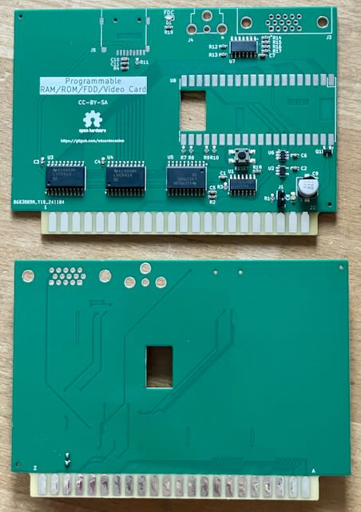
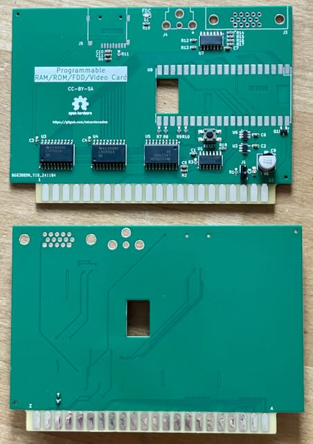
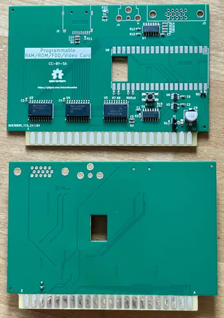

Die Platine wurde vom Originalautor getestet.
Projekt-Homepage • Interakiver Bestückungsplan • Schaltplan

Die Platine ist teilbestückt, es fehlen nur mehr Pico, SD-Karten-Slot und Videostecker.
| Komponente | Anzahl | Preis | Anbieter |
| Platine, teilbestückt | 1 | €19.00 | |
| Jumper | 1 | €0.03 | Reichelt |
| 90° D-Sub-15-HD Buchse, 1.98mm Zeilenabstand | 1 | €3.62 | Mouser |
| 90° Cinch Buchse | 1 | — | |
| Raspberry Pi Pico W | 1 | — | |
| SD Card Slot SMD | 1 | — | |
| Teilbausatz | €22.65 |